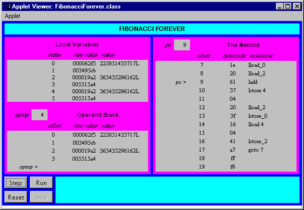

As mentioned in Chapter 5, "The Java Virtual Machine," the abstract specification of the execution engine is defined in terms of an instruction set. The remaining chapters of this book (Chapters 10 through 20) are a tutorial of that instruction set. They describe the instructions in functional groups and give relevant background information for each group .
This chapter covers instructions that deal with the operand stack and local variables. As the Java Virtual Machine is a stack-based machine, almost all of its instructions involve the operand stack in some way. Most instructions push values, pop values, or both as they perform their functions. This chapter describes the instructions that focus most exclusively on the operand stack--those that push constants onto the operand stack, perform generic stack operations, and transfer values back and forth between the operand stack and local variables .
Accompanying this chapter on the CD-ROM is an applet that interactively illustrates the material presented in the chapter. The applet, named Fibonacci Forever , simulates the Java Virtual Machine executing a method that generates the Fibonacci sequence. In the process, it demonstrates how the virtual machine pushes constants, pops values to local variables, and pushes values from local variables. At the end of this chapter, you will find a description of this applet and the bytecodes it executes.
Pushing Constants Onto the Stack
Many opcodes push constants onto the stack. Opcodes indicate the constant value to push in three different ways. The constant value is either implicit in the opcode itself, follows the opcode in the bytecode stream as an operand, or is taken from the constant pool.
Some opcodes by themselves indicate a type and constant value to push. For example, the iconst_1 opcode tells the Java Virtual Machine to push integer value one. Such opcodes are defined for some commonly pushed numbers of various types. All of these instructions are redundant to the instructions that take operands from the bytecode stream or refer to the constant pool, but these are more efficient. Because these instructions occupy only one byte in the bytecode stream, they increase the efficiency of bytecode execution and reduce the size of bytecode streams. The opcodes that push int s and float s are shown in Table 10-1.
Table 10-1. Pushing single-word constants onto the stack
| Opcode | Operand(s) | Description |
iconst_m1 | (none) | pushes int -1 onto the stack |
iconst_0 | (none) | pushes int 0 onto the stack |
iconst_1 | (none) | pushes int 1 onto the stack |
iconst_2 | (none) | pushes int 2 onto the stack |
iconst_3 | (none) | pushes int 3 onto the stack |
iconst_4 | (none) | pushes int 4 onto the stack |
iconst_5 | (none) | pushes int 5 onto the stack |
fconst_0 | (none) | pushes float 0 onto the stack |
fconst_1 | (none) | pushes float 1 onto the stack |
fconst_2 | (none) | pushes float 2 onto the stack |
The opcodes shown in the previous table push int s and float s, which are single-word values. Each slot on the Java stack is one word in size (at least 32 bits wide). Therefore each time an int or float is pushed onto the stack, it occupies one slot.
The opcodes shown in Table 10-2 push long s and double s. long and double values occupy 64 bits. Each time a long or double is pushed onto the stack, its value occupies two slots on the stack. Opcodes that indicate a specific long or double value to push are shown in Table 10-2.
Table 10-2. Pushing dual-word constants onto the stack
| Opcode | Operand(s) | Description |
lconst_0 | (none) | pushes long 0 onto the stack |
lconst_1 | (none) | pushes long 1 onto the stack |
dconst_0 | (none) | pushes double 0 onto the stack |
dconst_1 | (none) | pushes double 1 onto the stack |
One other opcode pushes an implicit constant value onto the stack. The aconst_null opcode, shown in Table 10-3, pushes a null object reference onto the stack.
As mentioned in earlier chapters, the format of an object reference depends upon the Java Virtual Machine implementation. An object reference will somehow refer to a Java object on the garbage-collected heap. A null object reference indicates an object reference variable does not currently refer to any valid object. The aconst_null opcode is used in the process of assigning null to an object reference variable.
Table 10-3. Pushing a null reference onto the stack
| Opcode | Operand(s) | Description |
aconst_null | (none) | pushes a null object reference onto the stack |
Two opcodes indicate the constant to push with an operand that immediately follows the opcode. These opcodes, shown in Table 10-4, are used to push integer constants that are within the valid range for byte or short types. The byte or short that follows the opcode is expanded to an int before it is pushed onto the stack. Operations on bytes and short s that have been pushed onto the stack are actually done on their int equivalents.
Table 10-4. Pushing byte and short constants onto the stack
| Opcode | Operand(s) | Description |
bipush | byte1 | expands byte1 (a byte type) to an int and pushes it onto the stack |
sipush | byte1, byte2 | expands byte1, byte2 (a short type) to an int and pushes it onto the stack |
Three opcodes push constants from the constant pool. These opcodes take operands that specify a constant pool index. The Java Virtual Machine looks up the constant pool entry given the index, determines the constant's type and value, and pushes it onto the stack.
The constant pool index is an unsigned value that immediately follows the opcode in the bytecode stream. Opcodes ldc and ldc_w push a single-word item onto the stack, either an int , float , or an object reference to a String . The difference between ldc and ldc_w is that ldc can only refer to constant pool locations one through 255 because its index is just 1 byte. (Constant pool location zero is unused.) ldc_w has a 2-byte index, so it can refer to any constant pool location. lcd2_w also has a 2-byte index, and it is used to refer to any constant pool location containing a long or double , which occupy two words. The opcodes that push constants from the constant pool are shown in Table 10-5.
Table 10-5. Pushing constant pool entries onto the stack
| Opcode | Operand(s) | Description |
ldc | indexbyte1 | pushes single-word value from constant pool entry specified by indexbyte1 onto the stack |
ldc_w | indexbyte1, indexbyte2 | pushes single-word value from constant pool entry specified by indexbyte1, indexbyte2 onto the stack |
ldc2_w | indexbyte1, indexbyte2 | pushes dual-word value from constant pool entry specified by indexbyte1, indexbyte2 onto the stack |
All string literals from Java source code end up as entries in a constant pool. If multiple classes of the same application use the same string literal, that string literal will appear in the class file of every class that uses it. For example, if three classes use the string literal "Harumph!" , that string will appear in the constant pool of each of three class files. Methods of those classes can use the ldc or ldc_w instructions to push onto the operand stack a reference to a String object that has the value "Harumph!" .
As mentioned in Chapter 8, "The Linking Model," the Java Virtual Machine resolves all string literals that have the same sequence of characters into the same String object. In other words, if multiple classes use the same literal string, say "Harumph!" , the Java Virtual Machine will only create one String object with the value "Harumph!" to represent all of those string literals.
When the virtual machine resolves the constant pool entry for a literal string, it "interns" the string. First, it checks to see if the string's sequence of characters have already been interned. If so, it just uses the same reference as the already-interned string. Otherwise, it creates a new String object, adds a reference to the new String object to its set of interned strings, and uses the reference to the newly-interned string.
Generic Stack Operations
Although most instructions in the Java Virtual Machine's instruction set operate on a particular type, some instructions manipulate the stack independent of type. As mentioned in Chapter 5, "The Java Virtual Machine," these generic (typeless) instructions cannot be used to break up dual-word values. These instructions are shown in Table 10-6.
Table 10-6. Stack manipulation
| Opcode | Operand(s) | Description |
nop | (none) | do nothing |
pop | (none) | pop the top word from the operand stack |
pop2 | (none) | pop the top two words from the operand stack |
swap | (none) | swap the top operand stack two words |
dup | (none) | duplicate top operand stack word |
dup2 | (none) | duplicate top two operand stack words |
dup_x1 | (none) | duplicate top operand stack word and put two down |
dup_x2 | (none) | duplicate top operand stack word and put three down |
dup2_x1 | (none) | duplicate top two operand stack words and put three down |
dup2_x2 | (none) | duplicate top two operand stack words and put four down |
The last four instructions shown in Table 10-6 can be a bit difficult to understand. Consult the description of these instructions in Appendix A for a picture of the stack before and after these instructions have been executed.
Pushing Local Variables Onto the Stack
Several opcodes exist that push int and float local variables onto the operand stack. Some opcodes are defined that implicitly refer to a commonly used local variable position. For example, iload_0 loads the int local variable at position zero. Other local variables are pushed onto the stack by an opcode that takes the local variable index from the first byte following the opcode. The iload instruction is an example of this type of opcode. The first byte following iload is interpreted as an unsigned 8-bit index that refers to a local variable.
The opcodes that push int and float local variables onto the stack are shown in Table 10-7.
Table 10-7. Pushing single-word local variables onto the stack
| Opcode | Operand(s) | Description |
iload | vindex | pushes int from local variable position vindex |
iload _0 | (none) | pushes int from local variable position zero |
iload _1 | (none) | pushes int from local variable position one |
iload _2 | (none) | pushes int from local variable position two |
iload _3 | (none) | pushes int from local variable position three |
fload | vindex | pushes float from local variable position vindex |
fload _0 | (none) | pushes float from local variable position zero |
fload _1 | (none) | pushes float from local variable position one |
fload _2 | (none) | pushes float from local variable position two |
fload _3 | (none) | pushes float from local variable position three |
Table 10-8 shows the instructions that push local variables of type long and double onto the stack. These instructions move two words from the local variable section of the stack frame to the operand stack section.
Table 10-8. Pushing dual-word local variables onto the stack
| Opcode | Operand(s) | Description |
lload | vindex | pushes long from local variable positions vindex and (vindex + 1) |
lload _0 | (none) | pushes long from local variable positions zero and one |
lload _1 | (none) | pushes long from local variable positions one and two |
lload _2 | (none) | pushes long from local variable positions two and three |
lload _3 | (none) | pushes long from local variable positions three and four |
dload | vindex | pushes double from local variable positions vindex and (vindex + 1) |
dload _0 | (none) | pushes double from local variable positions zero and one |
dload _1 | (none) | pushes double from local variable positions one and two |
dload _2 | (none) | pushes double from local variable positions two and three |
dload _3 | (none) | pushes double from local variable positions three and four |
The final group of opcodes that push local variables move object references (which occupy one word) from the local variables section of the stack frame to the operand section. These opcodes are shown in Table 10-9.
Table 10-9. Pushing object reference local variables onto the stack
| Opcode | Operand(s) | Description |
aload | vindex | pushes object reference from local variable position vindex |
aload _0 | (none) | pushes object reference from local variable position zero |
aload _1 | (none) | pushes object reference from local variable position one |
aload _2 | (none) | pushes object reference from local variable position two |
aload _3 | (none) | pushes object reference from local variable position three |
Popping to Local Variables
For each opcode that pushes a local variable onto the stack there exists a corresponding opcode that pops the top of the stack back into the local variable. The mnemonics of the pop opcodes can be formed from the mnemonics of the push opcodes by replacing "load" with "store." The opcodes that pop int s and float s from the top of the operand stack to a local variable are listed in Table 10-10. Each of these opcodes moves one single-word value from the top of the stack to a local variable.
Table 10-10. Popping single-word values into local variables
| Opcode | Operand(s) | Description |
istore | vindex | pops int to local variable position vindex |
istore _0 | (none) | pops int to local variable position zero |
istore _1 | (none) | pops int to local variable position one |
istore _2 | (none) | pops int to local variable position two |
istore _3 | (none) | pops int to local variable position three |
fstore | vindex | pops float to local variable position vindex |
fstore _0 | (none) | pops float to local variable position zero |
fstore _1 | (none) | pops float to local variable position one |
fstore _2 | (none) | pops float to local variable position two |
fstore _3 | (none) | pops float to local variable position three |
Table 10-11 shows the instructions that pop values of type long and double into a local variable. These instructions move a dual-word value from the top of the operand stack to a local variable.
Table 10-11. Popping dual-word values into local variables
| Opcode | Operand(s) | Description |
lstore | vindex | pops long to local variable positions vindex and (vindex + 1) |
lstore _0 | (none) | pops long to local variable positions zero and one |
lstore _1 | (none) | pops long to local variable positions one and two |
lstore _2 | (none) | pops long to local variable positions two and three |
lstore _3 | (none) | pops long to local variable positions three and four |
dstore | vindex | pops double to local variable positions vindex and (vindex + 1) |
dstore _0 | (none) | pops double to local variable positions zero and one |
dstore _1 | (none) | pops double to local variable positions one and two |
dstore _2 | (none) | pops double to local variable positions two and three |
dstore _3 | (none) | pops double to local variable positions three and four |
The final group of opcodes that pops to local variables are shown in Table 10-12. These opcodes pop an object reference from the top of the operand stack to a local variable.
Table 10-12. Popping object references into local variables
| Opcode | Operand(s) | Description |
astore | vindex | pops object reference to local variable position vindex |
astore _0 | (none) | pops object reference to local variable position zero |
astore _1 | (none) | pops object reference to local variable position one |
astore _2 | (none) | pops object reference to local variable position two |
astore _3 | (none) | pops object reference to local variable position three |
The wide Instruction
Unsigned 8-bit local variable indexes, such as the one that follows the iload instruction, limit the number of local variables in a method to 256. A separate instruction, wide , can extend an 8-bit index by another 8 bits, which raises the local variable limit to 65,536. The wide opcode modifies other opcodes. wide can precede an instruction, such as iload , that takes an 8-bit unsigned local variable index. Two bytes that form a 16-bit unsigned index into the local variables follows the wide opcode and the modified opcode.
Table 10-13 lists all but two of the opcodes that can be modified by wide . The other two opcodes, iinc and ret , are described in later chapters. The iinc instruction and its wide variant are described in Chapter 12, "Integer Arithmetic." The ret instruction and its wide variant are described in Chapter 18, "Finally Clauses."
Table 10-13. Popping object references into local variables
| Opcode | Operand(s) | Description |
wide | iload , indexbyte1, indexbyte2 | pushes int from local variable position index |
wide | lload , indexbyte1, indexbyte2 | pushes long from local variable position index |
wide | fload , indexbyte1, indexbyte2 | pushes float from local variable position index |
wide | dload , indexbyte1, indexbyte2 | pushes double from local variable position index |
wide | aload , indexbyte1, indexbyte2 | pushes object reference from local variable position index |
wide | istore , indexbyte1, indexbyte2 | pops int to local variable position vindex |
wide | lstore , indexbyte1, indexbyte2 | pops long to local variable position index |
wide | fstore , indexbyte1, indexbyte2 | pops float to local variable position index |
wide | dstore , indexbyte1, indexbyte2 | pops double to local variable position index |
wide | astore , indexbyte1, indexbyte2 | pops object reference to local variable position index |
When verifying bytecode sequences that include wide instructions, the opcode modified by wide is seen as an operand to wide . Jump instructions are not allowed to jump directly to an opcode modified by wide . For example, if a bytecode sequence include the instruction:
beginwide iload 257
end
No other opcode of that method's bytecode sequence would be allowed to jump directly to the iload opcode. In this case, the iload opcode must always be executed as an operand to the wide opcode.
Fibonacci Forever: A Simulation
The Fibonacci Forever applet, shown in Figure 10-1, demonstrates a Java Virtual Machine executing a sequence of bytecodes that generate the Fibonacci series. The applet is embedded in a web page on the CD-ROM in file applets/FibonacciForever.html . The bytecode sequence in the simulation was generated by the javac compiler for the calcSequence () method of the class shown below:
begin// On CD-ROM in file stackops/ex1/Fibonacci.javaclass Fibonacci {
static void calcSequence() {
long fiboNum = 1;
long a = 1;
long b = 1;
for (;;) {
fiboNum = a + b;
a = b;
b = fiboNum;
}
}
}
end
The calcSequence() method produces the Fibonacci series and places each Fibonacci number successively in the fiboNum variable. The first two numbers of the Fibonacci series are both ones. Each subsequent number is calculated by summing the previous two numbers, as in: 1, 1, 2, 3, 5, 8, 13, 21, 34, 55, and so on.
The bytecodes generated by javac for the calcSequence () method are shown below:
begin0 lconst_1 // Push long constant 11 lstore_0 // Pop long into local vars 0 & 1: long a = 1;
2 lconst_1 // Push long constant 1
3 lstore_2 // Pop long into local vars 2 & 3: long b = 1;
4 lconst_1 // Push long constant 1
5 lstore 4 // Pop long into local vars 4 & 5: long fiboNum = 1;
7 lload_0 // Push long from local vars 0 & 1
8 lload_2 // Push long from local vars 2 & 3
9 ladd // Pop two longs, add them, push result
10 lstore 4 // Pop long into local vars 4 & 5: fiboNum = a + b;
12 lload_2 // Push long from local vars 2 & 3
13 lstore_0 // Pop long into local vars 0 & 1: a = b;
14 lload 4 // Push long from local vars 4 & 5
16 lstore_2 // Pop long into local vars 2 & 3: b = fiboNum;
17 goto 7 // Jump back to offset 7: for (;;) {}
end
The javac compiler placed local variable a from the source into local variable slots 0 and 1 on the stack frame. It put b into slots 2 and 3 and fiboNum into slots 4 and 5. As this method calculates each successive Fibonacci number, it places the number into the fiboNum variable. As you run the simulation, therefore, you will see the Fibonacci series appear in the long value stored in local variable slots 4 and 5.
You may notice that long values are split across the two words they occupy in the local variables by placing the lower half (bits 0 through 31) in the first slot and the upper half (bits 32 through 63) in the second slot. For example, the lower half of the fiboNum variable is stored in local variable slot 4. The upper half of fiboNum is stored in local variable slot 5. On the operand stack, a similar representation is used. When a long value is pushed onto the operand stack, the lower half of the word is pushed, then the upper half.
Keep in mind that this manner of representing long values in the local variables and on the operand stack is an artifact of this particular (simulated) implementation of the Java Virtual Machine. As mentioned in Chapter 5, "The Java Virtual Machine," the specification does not dictate any particular way to layout long s and double s across the two words they occupy on the stack frame.
Although according to the best mathematical minds, the Fibonacci series does indeed go on forever, the calcSequence() method is able to generate Fibonacci numbers only for a while. Unfortunately for calcSequence() , the long type has a finite range. The highest Fibonacci number this simulation can calculate, therefore, is the highest Fibonacci number that can be represented in a long: 7540113804746346429L. After the simulation arrives at this point in the Fibonacci series, the next addition will overflow.
To drive the Fibonacci Forever simulation, use the Step, Reset, Run, and Stop buttons . Each time you press the Step button, the simulator will execute the instruction pointed to by the pc register. If you press the Run button, the simulation will continue with no further coaxing on your part until you press the Stop button. To start the simulation over, press the Reset button. For each step of the simulation, a panel at the bottom of the applet contains an explanation of what the next instruction will do. Happy clicking.

On the CD-ROM
The CD-ROM contains the source code examples from this chapter in the stackops directory. The Fibonacci Forever applet is contained in a web page on the CD-ROM in file applets/FibonacciForever.html . The source code for this applet is found alongside its class files, in the applets/JVMSimulators and applets/JVMSimulators .
The Resources Page
For more information about the material presented in this chapter, visit the resources page: http://www.artima.com/insidejvm/stackops.html .